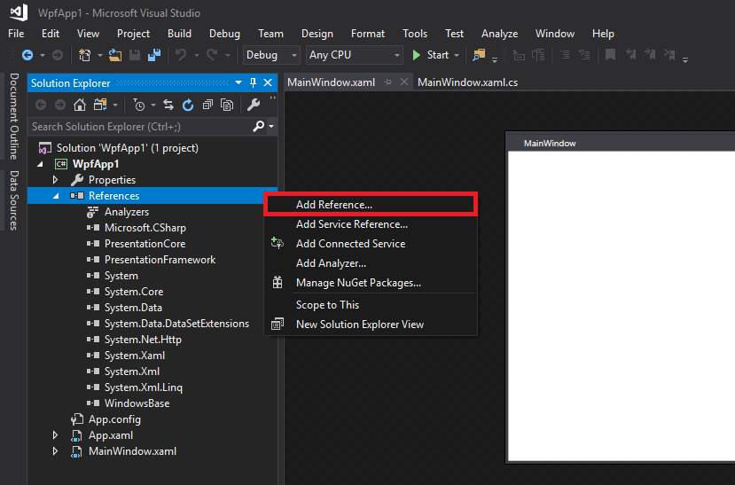
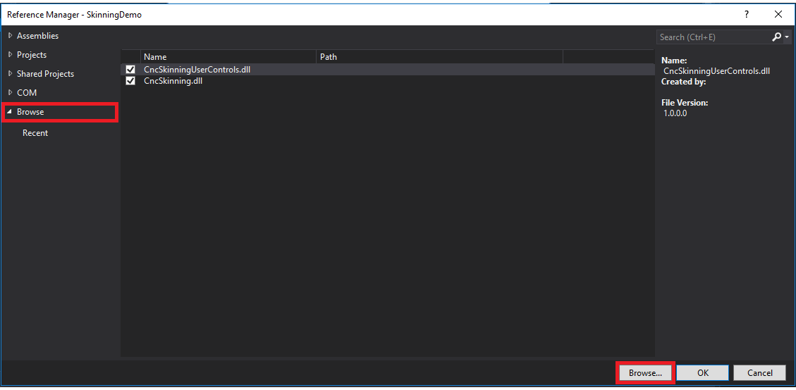
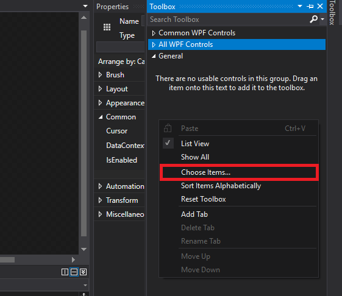
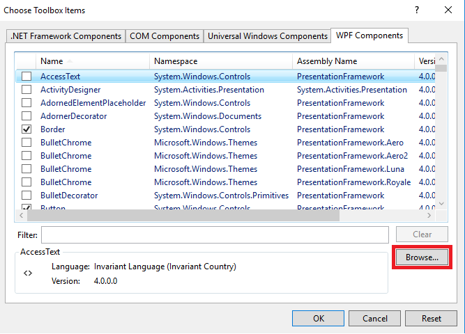
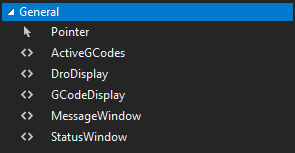

|
Centroid API 1.0.0
Centroid API for C# and VB.Net
|
Loading...
Searching...
No Matches
|
Centroid API 1.0.0
Centroid API for C# and VB.Net
|
Note: The StatusWindow control is currently not functioning, but it can still be built into any project. It will not update with information while the program is running.
In the Solution Explorer, under your WPF project, right click on References and select Add Reference....

Choose Browse category, then click Browse... and navigate to the location of CentroidAPIUserControls.dll. Select it, then press OK.

Right click on Toolbox Window, and select _Choose items...

Click Browse and navigate to where CentroidAPIUserControls.dll is stored. Click on it, and press Open

Press OK to add to Toolbox. You should now see the user controls in your Toolbox.

Click and drag the Controls from your Toolbox into your design.
Replace "yourcontrol" in the code below with the name of your control.